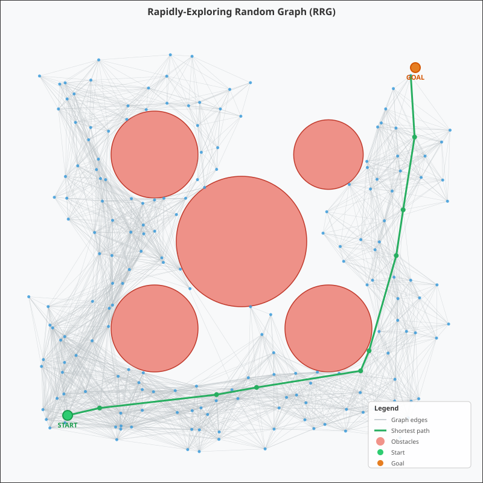

Rapidly-Exploring Random Graph (RRG)
What is RRG method including Pros and Cons
RRG (Rapidly-exploring Random Graph) is a sampling-based motion planning algorithm introduced by Karaman & Frazzoli (IJRR 2011). Unlike RRT which builds a tree, RRG builds a graph by connecting each new sample to ALL nearby nodes within a computed radius, not just a single parent.
The key idea: when a new sample is added, connect it to every existing node
within a ball of radius r(n) = γ · (log(n)/n)^(1/d), where n is the
current number of nodes, d is the dimensionality, and γ is a tuning
constant. This creates a richly connected graph that can be searched for
optimal paths.
Pros
- Asymptotically optimal: as the number of samples n → ∞, the cost of the best path in the graph converges to the true optimal path cost (almost surely). This is a property RRT does NOT have.
- Rich connectivity: multiple edges per node means alternative routes are available; Dijkstra or A* can extract the shortest path post-construction.
- Probabilistically complete: if a solution exists, RRG will find it given enough samples.
- Simple to implement: the core loop is straightforward — sample, steer, connect to all near neighbors.
Cons
- Higher memory usage: stores a full graph (many edges per node) vs. a tree (one parent per node). Edge count grows as O(n log n).
- Slower per-iteration: must perform a radius-neighbor search and collision-check multiple edges at each step, compared to RRT's single parent connection.
- Post-processing required: unlike RRT which gives an immediate start-to-goal tree path, RRG requires a graph search (Dijkstra) to extract the best path.
- Parameter sensitivity: the γ constant must be tuned — too small leads to sparse connectivity, too large wastes computation on redundant edges.
How does it work
Algorithm Steps (per iteration)
- Sample: generate a random point
x_randuniformly in the configuration space. - Find Nearest: locate the closest existing node
x_nearesttox_rand. - Steer: move from
x_nearesttowardx_randby at moststep_sizeto producex_new. - Collision Check: verify the segment from
x_nearesttox_newis obstacle-free. If not, discard and repeat. - Add Node: insert
x_newinto the graph. - Compute Radius: calculate
r(n) = γ · (log(n)/n)^(1/d). - Connect to Neighbors: find ALL existing nodes within radius
r(n)ofx_new. For each, if the connecting segment is collision-free, add an undirected edge. This is the key step that differentiates RRG from RRT. - Goal Check: if
x_newis withingoal_radiusof the goal, stop building and run Dijkstra to find the shortest path.
Connection Radius Formula
r(n) = γ · (log(n) / n)^(1/d)
- n = number of nodes currently in the graph
- d = dimension of configuration space (2 for 2D planning)
- γ = tuning constant (must exceed a theoretical threshold for optimality)
The radius shrinks as more nodes are added, so early iterations make long connections (ensuring connectivity) and later iterations make local ones (refining path quality).
Path Extraction
After the graph is built, Dijkstra's algorithm finds the shortest (least-cost) path from start to goal through the graph. The edge weights are Euclidean distances.
What is the connection with RRT, PRM methods
RRG sits between RRT and PRM, combining properties of both:
RRT (Rapidly-exploring Random Tree)
- Builds a tree: each new node connects to exactly ONE parent (the nearest node or best-cost parent).
- Explores space quickly by biasing growth toward unexplored regions.
- NOT asymptotically optimal — the first feasible path found is typically suboptimal and cannot be improved since the tree structure is fixed.
- RRT* improves on this by rewiring the tree, but still maintains tree structure.
PRM (Probabilistic Roadmap)
- A multi-query method: first builds a graph (roadmap) by sampling many points and connecting neighbors, then answers multiple start/goal queries on the same graph.
- Two-phase: construction phase (sample + connect) and query phase (graph search).
- Asymptotically optimal but designed for static environments with repeated queries.
RRG's relationship to both
| Property | RRT | RRG | PRM |
|---|---|---|---|
| Structure | Tree | Graph | Graph |
| Edges per node | 1 (parent) | Multiple | Multiple |
| Asymptotically optimal | No | Yes | Yes |
| Incremental | Yes | Yes | No (batch) |
| Single-query | Yes | Yes | No (multi) |
| Explores toward goal | Yes | Yes | No (uniform) |
- RRG = RRT's incremental exploration + PRM's graph connectivity.
- RRG keeps RRT's single-query, incremental sampling strategy (sample one point at a time, grow toward unexplored space), but adopts PRM's idea of connecting to multiple neighbors to form a graph.
- RRT* is derived from RRG: it is RRG with the additional constraint that the graph must remain a tree (achieved by keeping only the best-cost parent edge and rewiring). RRT* ⊂ RRG in terms of edges retained.
- The theoretical result (Karaman & Frazzoli 2011) proves that RRT is NOT asymptotically optimal, while RRG and RRT* both ARE, precisely because they connect to multiple neighbors within the shrinking radius r(n).
Examples
// ---------- RRG Algorithm ---------- class RRG { public: RRG(Point start, Point goal, double x_min, double x_max, double y_min, double y_max, double step_size, double goal_radius, int max_iterations, double gamma_rrg) : start_(start) , goal_(goal) , x_min_(x_min) , x_max_(x_max) , y_min_(y_min) , y_max_(y_max) , step_size_(step_size) , goal_radius_(goal_radius) , max_iterations_(max_iterations) , gamma_rrg_(gamma_rrg) , gen_(std::random_device{}()) , dist_x_(x_min, x_max) , dist_y_(y_min, y_max) { // Add start node Node start_node; start_node.id = 0; start_node.position = start_; nodes_.push_back(start_node); } void addObstacle(const Obstacle& obs) { obstacles_.push_back(obs); } bool build() { for (int iter = 0; iter < max_iterations_; ++iter) { // 1. Sample a random point Point x_rand = sample(); // 2. Find the nearest node int nearest_id = findNearest(x_rand); const Point& x_nearest = nodes_[nearest_id].position; // 3. Steer toward the random sample Point x_new = steer(x_nearest, x_rand); // 4. Check if the new point is collision-free if (!isCollisionFree(x_nearest, x_new)) { continue; } // 5. Add the new node int new_id = static_cast<int>(nodes_.size()); Node new_node; new_node.id = new_id; new_node.position = x_new; nodes_.push_back(new_node); // 6. Find all nodes within the RRG radius double radius = computeRadius(); std::vector<int> near_ids = findNear(x_new, radius); // 7. Connect to ALL collision-free neighbors within radius // (This is the key difference from RRT: we form a GRAPH) for (int near_id : near_ids) { if (near_id == new_id) continue; if (isCollisionFree(nodes_[near_id].position, x_new)) { addEdge(new_id, near_id); } } // Also ensure connection to nearest node if not already if (std::find(nodes_[new_id].neighbors.begin(), nodes_[new_id].neighbors.end(), nearest_id) == nodes_[new_id].neighbors.end()) { if (isCollisionFree(nodes_[nearest_id].position, x_new)) { addEdge(new_id, nearest_id); } } // 8. Check if we reached the goal if (x_new.distanceTo(goal_) <= goal_radius_) { goal_node_id_ = new_id; std::cout << "Goal reached at iteration " << iter << " with " << nodes_.size() << " nodes.\n"; return true; } } std::cout << "Goal not reached after " << max_iterations_ << " iterations (" << nodes_.size() << " nodes).\n"; return false; } // Find shortest path from start to goal using BFS/Dijkstra on the graph std::vector<Point> findShortestPath() const { if (goal_node_id_ < 0) return {}; int n = static_cast<int>(nodes_.size()); std::vector<double> dist(n, std::numeric_limits<double>::infinity()); std::vector<int> prev(n, -1); std::vector<bool> visited(n, false); dist[0] = 0.0; // Simple Dijkstra for (int i = 0; i < n; ++i) { // Find unvisited node with minimum distance int u = -1; double min_dist = std::numeric_limits<double>::infinity(); for (int j = 0; j < n; ++j) { if (!visited[j] && dist[j] < min_dist) { min_dist = dist[j]; u = j; } } if (u == -1) break; visited[u] = true; // Relax neighbors for (int v : nodes_[u].neighbors) { double edge_cost = nodes_[u].position.distanceTo(nodes_[v].position); if (dist[u] + edge_cost < dist[v]) { dist[v] = dist[u] + edge_cost; prev[v] = u; } } } // Reconstruct path std::vector<Point> path; int current = goal_node_id_; while (current != -1) { path.push_back(nodes_[current].position); current = prev[current]; } std::reverse(path.begin(), path.end()); if (!path.empty() && path.front().distanceTo(start_) < 1e-9) { return path; } return {}; // No path found } // Statistics int getNodeCount() const { return static_cast<int>(nodes_.size()); } int getEdgeCount() const { int count = 0; for (const auto& node : nodes_) { count += static_cast<int>(node.neighbors.size()); } return count / 2; // each edge counted twice (undirected) } double getAverageDegree() const { if (nodes_.empty()) return 0.0; double total = 0.0; for (const auto& node : nodes_) { total += node.neighbors.size(); } return total / nodes_.size(); } const std::vector<Node>& getNodes() const { return nodes_; } const std::vector<Obstacle>& getObstacles() const { return obstacles_; } Point getStart() const { return start_; } Point getGoal() const { return goal_; } double getXMin() const { return x_min_; } double getXMax() const { return x_max_; } double getYMin() const { return y_min_; } double getYMax() const { return y_max_; } private: Point sample() { return {dist_x_(gen_), dist_y_(gen_)}; } int findNearest(const Point& p) const { int nearest = 0; double min_dist = std::numeric_limits<double>::infinity(); for (int i = 0; i < static_cast<int>(nodes_.size()); ++i) { double d = p.distanceTo(nodes_[i].position); if (d < min_dist) { min_dist = d; nearest = i; } } return nearest; } std::vector<int> findNear(const Point& p, double radius) const { std::vector<int> near; for (int i = 0; i < static_cast<int>(nodes_.size()); ++i) { if (p.distanceTo(nodes_[i].position) <= radius) { near.push_back(i); } } return near; } Point steer(const Point& from, const Point& to) const { double d = from.distanceTo(to); if (d <= step_size_) { return to; } double ratio = step_size_ / d; return { from.x + ratio * (to.x - from.x), from.y + ratio * (to.y - from.y) }; } // Collision check: verify the segment from 'a' to 'b' doesn't hit obstacles bool isCollisionFree(const Point& a, const Point& b) const { // Check if endpoints are in free space for (const auto& obs : obstacles_) { if (obs.contains(a) || obs.contains(b)) { return false; } } // Check along the segment at discrete intervals double d = a.distanceTo(b); int steps = std::max(2, static_cast<int>(d / 0.1)); for (int i = 1; i < steps; ++i) { double t = static_cast<double>(i) / steps; Point p = {a.x + t * (b.x - a.x), a.y + t * (b.y - a.y)}; for (const auto& obs : obstacles_) { if (obs.contains(p)) { return false; } } } return true; } // RRG connection radius: r(n) = gamma * (log(n)/n)^(1/d) double computeRadius() const { int n = static_cast<int>(nodes_.size()); if (n <= 1) return step_size_ * 2.0; constexpr int d = 2; // 2D space double r = gamma_rrg_ * std::pow(std::log(static_cast<double>(n)) / n, 1.0 / d); // Clamp to step_size to avoid disconnected components early on return std::max(r, step_size_); } void addEdge(int u, int v) { // Undirected graph: add both directions nodes_[u].neighbors.push_back(v); nodes_[v].neighbors.push_back(u); } // Configuration Point start_, goal_; double x_min_, x_max_, y_min_, y_max_; double step_size_; double goal_radius_; int max_iterations_; double gamma_rrg_; // State std::vector<Node> nodes_; std::vector<Obstacle> obstacles_; int goal_node_id_ = -1; // Random number generation std::mt19937 gen_; std::uniform_real_distribution<double> dist_x_; std::uniform_real_distribution<double> dist_y_; };
